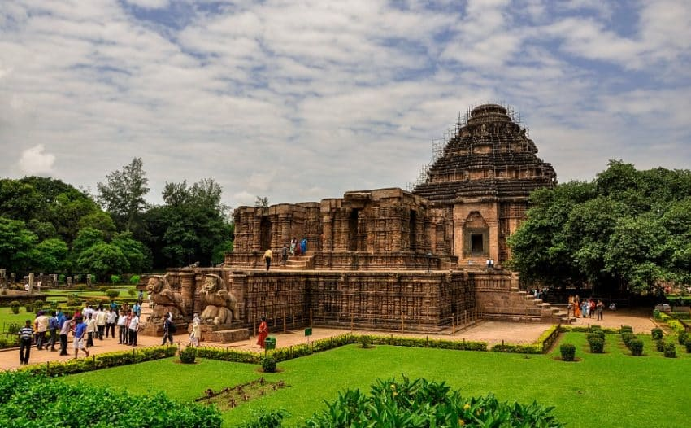

Monument Name: ସ୍ମାରକ ନାମ: Konark Sun Temple କୋଣାର୍କ ସୂର୍ଯ୍ୟ ମନ୍ଦିର
Period: ଯୁଗ: 13th Century CE ୧୩ଶତାବ୍ଦୀ ଖ୍ରୀଷ୍ଟାବ୍ଦ
Location: ଅବସ୍ଥିତି: Konark, Puri କୋଣାର୍କ, ପୁରୀ

Konark Sun Temple – Odisha କୋଣାର୍କ ସୂର୍ଯ୍ୟ ମନ୍ଦିର – ଓଡ଼ିଶା
The Konark Sun Temple is a 13th-century CE temple dedicated to the Sun God. It is an outstanding example of Kalinga architecture. The Konark Sun Temple is a 13th-century CE temple dedicated to the Sun God. It is an outstanding example of Kalinga architecture. The Konark Sun Temple is a 13th-century CE temple dedicated to the Sun God. It is an outstanding example of Kalinga architecture. The Konark Sun Temple is a 13th-century CE temple dedicated to the Sun God. It is an outstanding example of Kalinga architecture. କୋଣାର୍କ ସୂର୍ଯ୍ୟ ମନ୍ଦିର ୧୩ଶତାବ୍ଦୀର ଏକ ମନ୍ଦିର, ଯାହା ସୂର୍ଯ୍ୟ ଦେବଙ୍କୁ ଉତ୍ସର୍ଗ କରାଯାଇଛି। କୋଣାର୍କ ସୂର୍ଯ୍ୟ ମନ୍ଦିର ୧୩ଶତାବ୍ଦୀର ଏକ ମନ୍ଦିର, ଯାହା ସୂର୍ଯ୍ୟ ଦେବଙ୍କୁ ଉତ୍ସର୍ଗ କରାଯାଇଛି। କୋଣାର୍କ ସୂର୍ଯ୍ୟ ମନ୍ଦିର ୧୩ଶତାବ୍ଦୀର ଏକ ମନ୍ଦିର, ଯାହା ସୂର୍ଯ୍ୟ ଦେବଙ୍କୁ ଉତ୍ସର୍ଗ କରାଯାଇଛି। କୋଣାର୍କ ସୂର୍ଯ୍ୟ ମନ୍ଦିର ୧୩ଶତାବ୍ଦୀର ଏକ ମନ୍ଦିର, ଯାହା ସୂର୍ଯ୍ୟ ଦେବଙ୍କୁ ଉତ୍ସର୍ଗ କରାଯାଇଛି। କୋଣାର୍କ ସୂର୍ଯ୍ୟ ମନ୍ଦିର ୧୩ଶତାବ୍ଦୀର ଏକ ମନ୍ଦିର, ଯାହା ସୂର୍ଯ୍ୟ ଦେବଙ୍କୁ ଉତ୍ସର୍ଗ କରାଯାଇଛି।
The monument is famous for its stone-carved wheels and exquisite sculptures. ଏହି ସ୍ମାରକ ତାହାର ପାଥର ଚକ୍ର ଓ ସୁନ୍ଦର ମୂର୍ତ୍ତିଶିଳ୍ପ ପାଇଁ ପ୍ରସିଦ୍ଧ।
Audio Guide – Konark Sun Temple ଧ୍ୱନି ଗାଇଡ୍ – କୋଣାର୍କ ସୂର୍ଯ୍ୟ ମନ୍ଦିର
 Virtual Tour
Virtual Tour